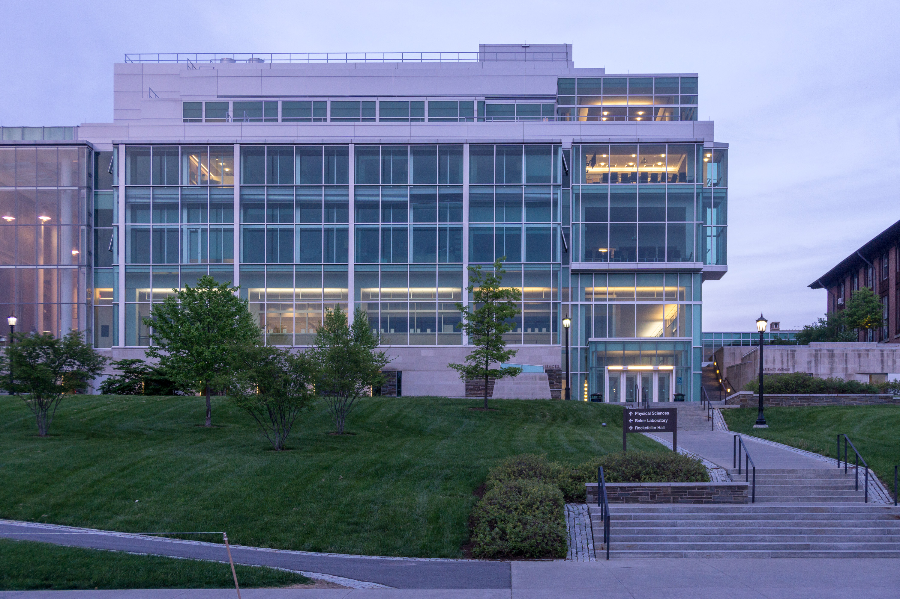
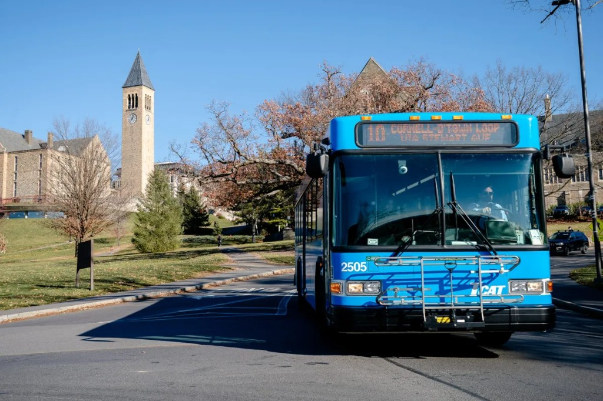

NEUDC 2026 is at Cornell's Physical Sciences Building. Use the sections below to plan your trip.
| Airport | Drive to Cornell | Best for |
|---|---|---|
| Ithaca Tompkins (ITH) | 15 min | Fastest option, but limited flights. |
| Syracuse (SYR) | 1 hour | More flights and rental-car options. |
| New York (JFK/EWR) | 4 hours | Best for international arrivals and Campus-to-Campus bus connections. |
Flying through NYC airports? Cornell's Campus-to-Campus coach runs daily between Ithaca and New York City.
Schedules: Book and view schedules
Contact: 607-254-8747 or c2cbus@cornell.edu
Sessions and events are held in the Physical Sciences Building.

Local transit in Ithaca is primarily provided by TCAT buses, which connect Cornell University and downtown Ithaca.

Route: TCAT Route 10 runs frequently between Cornell University and downtown Ithaca and stops at Goldwin Smith Hall, directly across from the Physical Sciences Building.
Fares: You can pay with the Tfare app, a Tcard, or exact cash.
Trip planning: Check live bus times in the map links below or in Google Maps.
Parking options vary by day and lot. Use the guidance below to plan ahead.
Weekdays: Plan for a permit or paid visitor parking through ParkMobile or lot kiosks.
Weekends: Parking may be available on Hoy Road; always follow posted lot signs.
Parking resources:
Conference hotel blocks are in progress. Current options are listed below for planning purposes.
| Hotel | Estimated rate |
|---|---|
| Best Western | $179/night |
| Fairfield Inn (Marriott) | $131/night |
| Hampton Inn | $179/night |
| Hilton Garden Inn Ithaca | $209/night |
| Holiday Inn Express | $128/night |
Rates are preliminary and may change until conference blocks are finalized.